CARRY IT
Sans système, tu juges ton projet uniquement sur le résultat final. Tant qu'il n'est pas visible, le doute s'installe — et la plupart abandonnent trop tôt.
Pour ceux qui construisent quelque chose qui prend des années.



TU TE RECONNAIS ?

Tu bosses. Tu fais des sacrifices. Mais t'as aucun moyen de savoir si t'es vraiment en train d'avancer — ou juste occupé. Tu bosses, tu fais des sacrifices, mais sans repère clair pour savoir si tu progresses.

T'as bossé. T'as sacrifié. Mais à la fin de la semaine, t'as rien pour te dire que t'es plus proche. Juste une intuition — ou un doute. À la fin de la semaine, tu n'as aucun signal concret pour te dire que tu te rapproches.

Mais ton environnement veut des résultats en 3 mois. Ce décalage — entre le temps qu'il faut vraiment et celui qu'on t'accorde — c'est lui qui tue la plupart des projets. Mais autour de toi, tout pousse vers des résultats rapides. C'est ce décalage qui casse beaucoup de projets.

T'as déjà quitté un projet. Pas parce que t'étais nul. Parce que dans le vide, sans signal clair, le doute gagne toujours. Et cette fois — tu refuses que ça recommence. Sans signal clair, le doute revient vite. Et c'est souvent là qu'un projet s'arrête trop tôt.
Sans preuve concrète que tu avances, le doute gagne toujours.
CarryIt est le système qui te donne cette preuve.
Sans preuve concrète, le doute finit toujours par revenir. CarryIt te montre que tu avances.
LE PROBLÈME
Les outils sont faits pour aujourd’hui. Pas pour tes 5 prochaines années. Les outils sont faits pour aujourd’hui. Pas pour un projet de plusieurs années.
Tu passes des heures à construire le système avant même de pouvoir l’utiliser. Tu passes d’abord du temps à construire l’outil, avant de pouvoir t’en servir.
Parfait pour s'organiser au court terme. Mais elles ne structurent ni les projets long terme ni la progression réelle. Utile à court terme, mais pas pour structurer un projet long terme ni mesurer une vraie progression.
Mais elles ne sont reliées à aucun objectif mesurable — et aucune n’est pensée pour le long terme. Mais ils ne sont pas reliés à un objectif mesurable sur plusieurs années.
Reposent sur des mécaniques séduisantes mais superficielles — pensées pour la rétention. Elles ne confrontent jamais l'utilisateur à une progression réelle. Ça retient l’attention, mais ça ne montre jamais une progression réelle.
Il manquait un système pour relier vision long terme et exécution quotidienne. Il manquait un système pour relier vision long terme et exécution quotidienne.
LA SOLUTION
6 étapes pour transformer une ambition en action mesurable. 6 étapes pour passer d'une ambition à l'action.
Pas "être en forme". Pas "gagner plus". Une ambition précise, nommée, datée — gravée dans le système avant tout le reste.
Ton ambition passe par le cadre SMART. Tu ressors avec une date, des critères de succès, et une trajectoire. Pas une intention. Un plan solide.
Pas dix métriques qui te noient. Un seul KPI — celui qui ne ment pas. Chaque semaine, tu sais si tu avances ou si tu stagnes.
Des checkpoints à 30, 90, 180 jours. À chaque jalon coché, une preuve concrète que tu avances — bien avant la ligne d'arrivée.
Une to-do list simple et efficace pour t'organiser et exécuter au quotidien. Chaque tâche est connectée à ton projet long terme — tu sais quoi faire, et tu avances.
Tes projets, ton ambition long terme, ta progression concrète — semaine après semaine. Le dashboard centralise ce qui compte vraiment, pour que tu ne te poses jamais la question. Tous tes projets, ta progression et ton ambition au même endroit.
LE PIPELINE CARRYIT EN ACTION
N'importe quelle ambition. Un seul système.
POURQUOI CETTE APP EXISTE
C'est ici que tout se forge.
C'est le résultat du fond.
Le mental ne se révèle pas quand tu es à ton top.
Il se construit quand tu es au fond.
Ces cycles sont le chemin. Pas un détour.
Dopamine rapide. Badges. Confettis.
CarryIT équipe la grande ascension.
Résilience long terme. Sans gamification.
Pas de badges, pas de confettis. Juste la prochaine étape.
Pensée pour durer. Reliée à l'exécution quotidienne.
Les tempêtes font partie du plan. Rien ne marche du premier coup. Documenter l'échec est le seul moyen de rester lucide.
Devant un mur ?
Documente, Pivote, Ré-exécute.
CE QUE TU VAS DEVENIR
Résilient
Tu tiens sur plusieurs années. Même quand les résultats ne sont pas encore là.
Lucide
Tu sais exactement où tu en es. Pas d'illusion. Pas d'interprétation. Les faits.
Anti-dopamine
Pas de badge pour avoir bu de l'eau. Carry IT ne te récompense pas. Il te confronte.
QUI EST DERRIÈRE
"Le mental ne se revele pas au top. Il se construit quand tu es en bas."
Nils — Fondateur, CarryIT
Je ne cherche pas cet endroit. Je refuse juste l'enfer subi. Je choisis l'enfer qui forge.
CarryIT est ne pour ca : un cadre clair, sans dopamine, pour transformer une ambition en trajectoire mesurable et tenir des annees.
Ma vision : forger une mentalite capable d'affronter la realite. Ma mission : structurer ta vie et te donner la preuve que tu avances vraiment.
Je ne vends pas un reve. Je construis un systeme pour ceux qui veulent faire quelque chose de grand.
Carry ta putain de vie.
Teste en 2 minutes
Sans KPI ni jalons, tu juges uniquement sur le résultat final — et tu abandonnes trop tôt. CarryIT transforme ton ambition en trajectoire claire et te prouve semaine après semaine que tu avances.
Créer mon premier objectifGratuit · Sans carte bancaire · Tes données restent privées